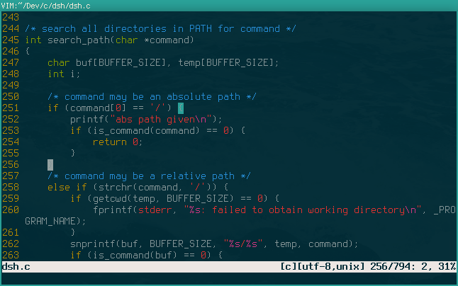

Axon is a lightweight terminal emulator built using GTK+-2.0 and the VTE terminal widget. It aims to be fast, simple, and light on resources.
Features
Nearly every aspect of Axon's behaviour is customizable. Customizable features include:
- Url highlighting
- Colorscheme
- Transparency (true or native)
- Font
- Toggle bold text
- Autohide mouse while typing
Axon will attempt to source a config file at runtime from the following locations (in order):
--config=FILE$XDG_CONFIG_HOME/axon/axonrc$HOME/.axonrc
Reasonable compiled-in default settings will be used if no config file is found. A documented example config file explaining the various settings and their values can be found at /usr/share/doc/axon/axonrc.
Available colorschemes are located in /usr/share/axon/colorschemes/ by default.
Screenshots
Dependencies
Axon requires VTE 2.0 and GTK+ 2.0 or above.